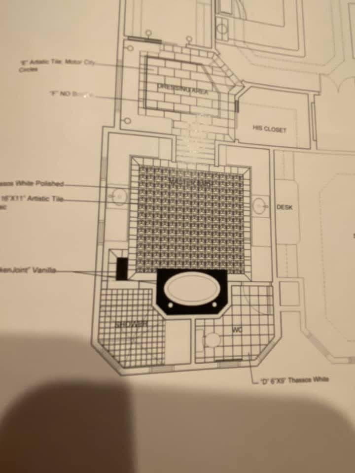
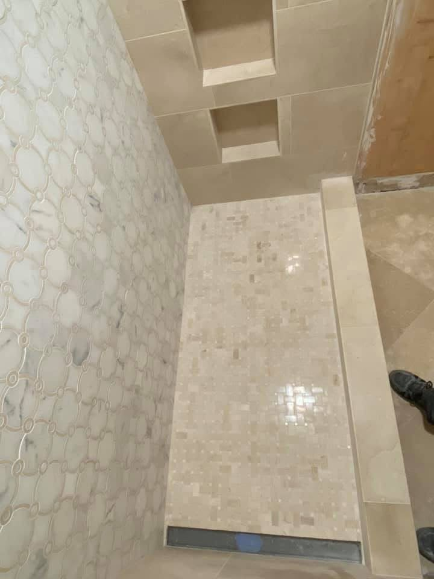
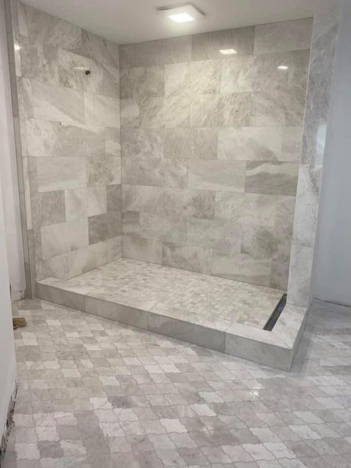
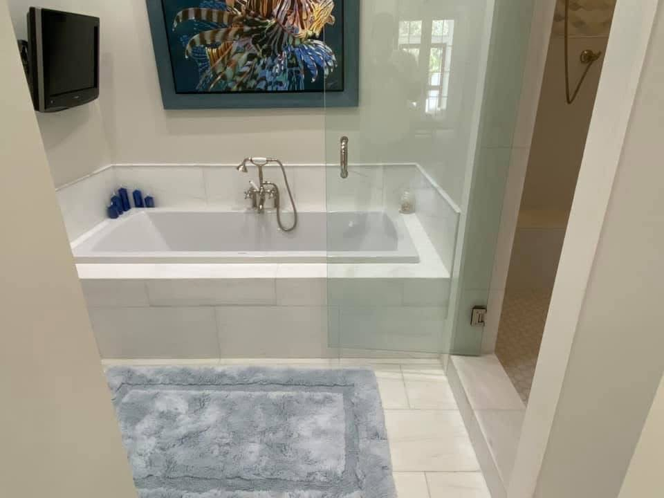
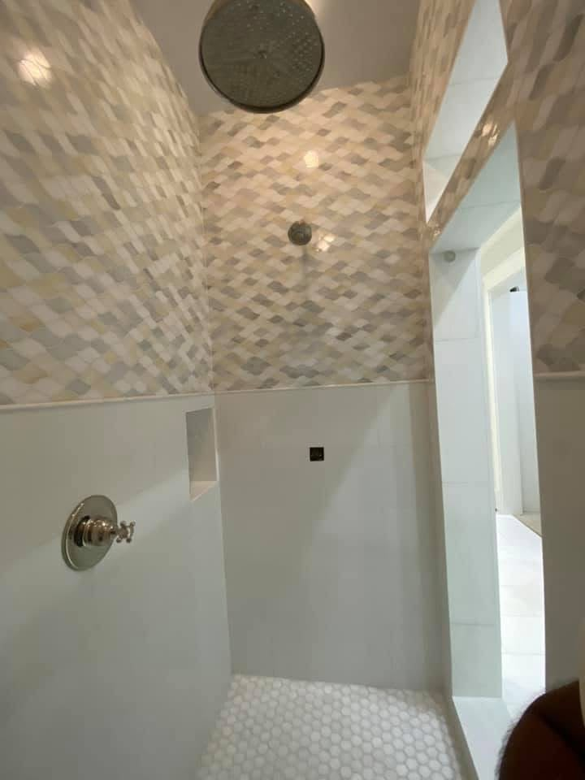
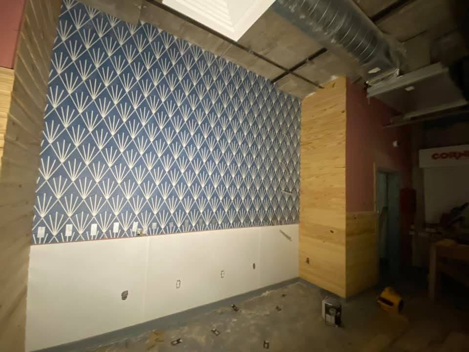
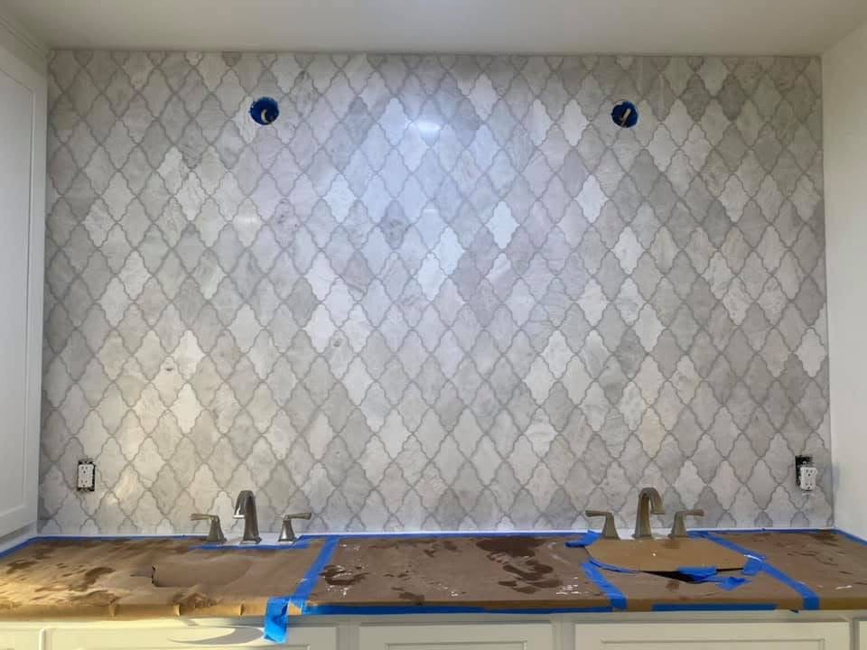
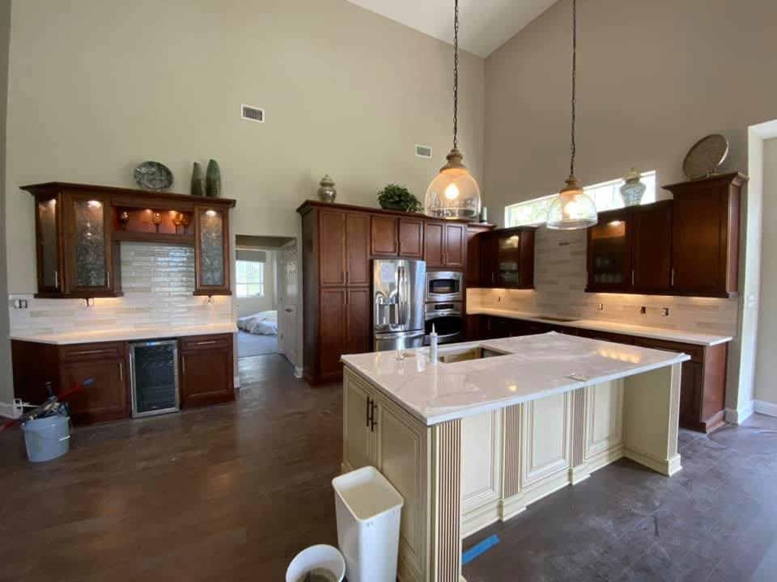

Tile
Walls, floors, showers, backsplashes and detailed architectural surfaces.
↗RESIDENTIAL SURFACES · DESTIN, FLORIDA
Premium tile, marble, porcelain, flooring and remodeling solutions for refined residential spaces.
01 — THE SURFACE
Uneven joints. Improper cuts. Visible transitions. Misaligned patterns. In high-end residential remodeling, the details are not details. They are the finish.
MATERIAL · PRECISION · CRAFT
Material selection matters. Installation determines how that material actually lives in the room.
02 — CAPABILITIES
From a precise backsplash to a complete bathroom transformation, Tile Plus approaches every surface as part of the architecture.
Walls, floors, showers, backsplashes and detailed architectural surfaces.
↗Refined stone surfaces with careful layout, cuts, edges and transitions.
↗Large-format and detailed porcelain installations planned around the room.
↗LVP, laminate, tile and patterned floors with considered alignment.
↗Showers, niches, tub surrounds, floors and finished wet-area surfaces.
↗Backsplashes and surface installations coordinated with cabinetry and counters.
↗03 — REAL WORK
Real Tile Plus work, photographed on actual residential projects. Showers, bathrooms, kitchens, fireplaces, floors and detailed surfaces — each image is proof of what happens when material and installation are treated as one.
Start your project ↗

LIKE WHAT YOU SEE?

04 — THE DETAIL
In premium remodeling, precision is visible in the smallest details: a corner, a niche, a grout line, a transition from one material to the next.
ALIGNMENT / SCALE / FINISH05 — KITCHEN
From subtle subway tile to expressive geometric patterns, the right backsplash brings material, proportion and craftsmanship together.
Discuss your kitchen ↗06 — SIGNATURE PROJECTS
SHOWERS · TUBS · BACKSPLASHES · FIREPLACES · FLOORS

Multiple wet-area surfaces brought together through tile, mosaic, niches, custom bases and precise transitions.

A graphic pattern installed as a continuous architectural surface, with alignment carrying the design from edge to edge.


07 — THE PROCESS
Clear communication, careful preparation and precise installation keep the finished space at the center of the project.
Understand the room, goals, materials and scope.
Think through layout, patterns, transitions and details before installation.
Prepare surfaces and protect the surrounding space.
Execute the surface work with attention to alignment and finish.
Refine edges, transitions, grout and visible details.
Leave the finished space ready to be lived in.
READY TO MOVE FORWARD?
Request a project consultation ↗08 — IN MOTION
Real project footage brings the installation process closer — from room movement to finished surfaces.
SINCE 2019
Tile Plus has focused on one thing: doing surface work with precision, care and attention to the finished space.
WHY TILE PLUS

TILE PLUS · DESTIN
Let’s create a finish worth coming home to.